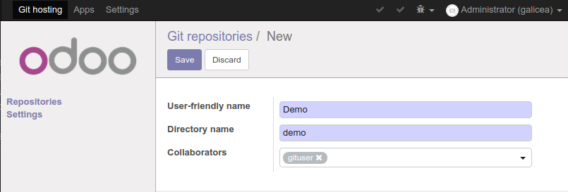
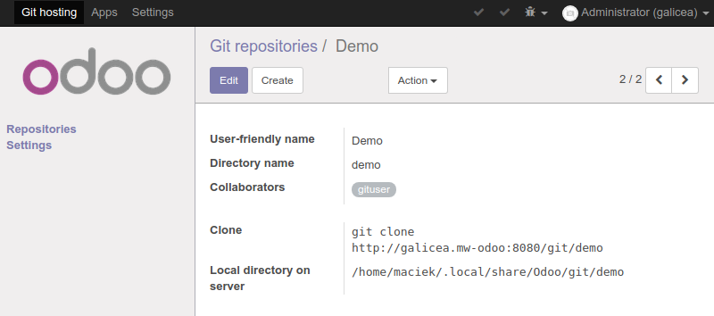
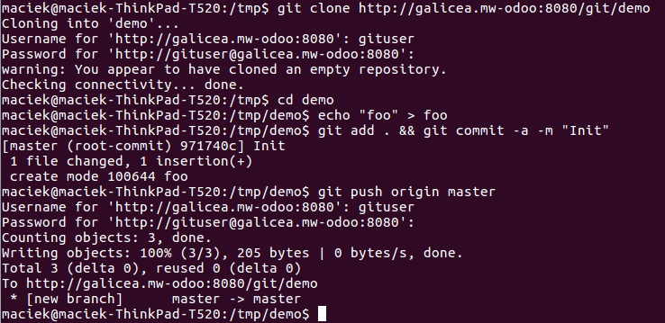

<section class="oe_container">
    <div class="oe_row oe_spaced">
        <div class="oe_span12">
          <h2 class="oe_slogan">Galicea Git hosting</h2>
          <h3 class="oe_slogan">
            Simple Odoo-based HTTP interface for Git repository hosting
          </h3>
<p>
  This add-on allows you to create Git repositories hosted by Odoo, and add specific Odoo users as collaborators. Only those users will have access to the repository. It requires <tt>git</tt> package, including <tt>git-http-backend</tt>, installed in the system. For Ubuntu/Debian it's enough to call
<pre>sudo apt install git</pre>
</p>
<h3>Creating repositories</h3>


<h3>Interacting with the repository</h3>

      </div>
    </div>
</section>
